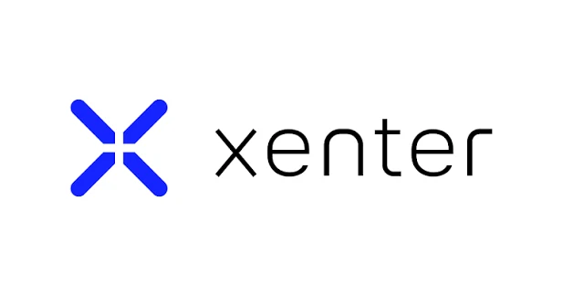

Medical-device R&D
Xenter
At Xenter, I work on the R&D team, contributing to new product development and supporting the manufacturing team as we scale up production.

Visual inspection
Built a visual inspection system for live defect detection on 148 μm wire during manufacturing.
Sterilization validation
Led validation coordination by managing guidewire sample production and communications with the sterilization laboratory.
Cleanroom operations & environmental monitoring
I helped establish cleanroom cleaning procedures and am responsible for particulate control, air and surface sampling, and environmental monitoring. I set up these processes in our quality management system (QMS) and implemented them in the cleanroom.
Skills: Visual inspection, Manufacturing, Validation coordination, Environmental monitoring, Quality management systems